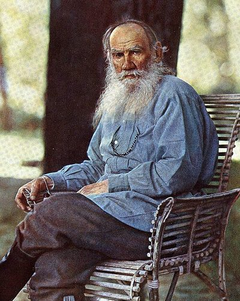

Ideologies / Anarchist
What is Tolstoyan Anarcho Pacifism?
Tolstoyan Anarcho Pacifism is a political ideology in the Anarchist family. It takes the Sermon on the Mount literally and concludes that all violence is forbidden, which rules out armies, courts, police and therefore the state itself. Christians should refuse military service, oaths and taxes for war. Tolstoy paired this with simple rural living and shared land.
Resist not evil by force.
Defined from: Leo Tolstoy, The Kingdom of God Is Within You (1894)
See how close you are to Tolstoyan Anarcho Pacifism Dare a friend to answer as one

.jpg){kind=link}
Where Tolstoyan Anarcho Pacifism stands on 13 axes
Each axis runs from 0 to 100. A score of 50 is the middle. On a classic compass it sits in the Libertarian Left quadrant.
| Axis | Position | Score | In words |
|---|---|---|---|
| EconomyMarket to Planned | 50 | Balanced | |
| OwnershipPrivate to Collective | 80 | Strongly Collective | |
| RightsLiberty to Security | 0 | Very strongly Liberty | |
| GovernmentDemocracy to Autocracy | 0 | Very strongly Democracy | |
| StructureDecentralised to Centralised | 0 | Very strongly Decentralised | |
| NationInternationalist to Nationalist | 0 | Very strongly Internationalist | |
| ImmigrationMulticulturalist to Assimilationist | 30 | Strongly Multiculturalist | |
| ValuesProgressive to Traditional | 70 | Strongly Traditional | |
| TechnologyAccelerationist to Precautionary | 85 | Very strongly Precautionary | |
| EnvironmentIndustrialist to Environmentalist | 80 | Strongly Environmentalist | |
| ReligionSecular to Religious | 95 | Very strongly Religious | |
| MilitaryPacifist to Militarist | 0 | Very strongly Pacifist | |
| TradeFree Trade to Protectionist | 35 | Leans Free Trade |
Ideologies closest to Tolstoyan Anarcho Pacifism
- Anabaptist Pacifism81% alike
- Neo Luddism74% alike
- Engaged Buddhism74% alike
- Indigenous Resurgence71% alike
- Gandhism71% alike
Its opposite on this map is Juche, at 6%.
Parties near Tolstoyan Anarcho Pacifism
- DiggersEngland. The True Levellers Standard Advanced (1649)77% alike
- American Solidarity PartyUnited States. Platform and Principles (2024)71% alike
- SolidarityPoland. The Self Governing Republic (1981)68% alike
- Italian People's PartyItaly. Appeal to the Free and Strong (1919)67% alike
Common questions
What is Tolstoyan Anarcho Pacifism?
Tolstoyan Anarcho Pacifism is a political ideology in the Anarchist family. It takes the Sermon on the Mount literally and concludes that all violence is forbidden, which rules out armies, courts, police and therefore the state itself. Christians should refuse military service, oaths and taxes for war. Tolstoy paired this with simple rural living and shared land.
What does Tolstoyan Anarcho Pacifism believe?
In one line: Resist not evil by force. Its strongest positions are Liberty, Democracy, Decentralised. It takes the Sermon on the Mount literally and concludes that all violence is forbidden, which rules out armies, courts, police and therefore the state itself. Christians should refuse military service, oaths and taxes for war. Tolstoy paired this with simple rural living and shared land.
Who founded Tolstoyan Anarcho Pacifism?
Tolstoyan Anarcho Pacifism is defined here from The Kingdom of God Is Within You (1894) by Leo Tolstoy. The thinker most tied to it is Leo Tolstoy (1828 to 1910).
Is Tolstoyan Anarcho Pacifism left wing or right wing?
On a classic two axis compass Tolstoyan Anarcho Pacifism falls in the Libertarian Left quadrant, which means the economic left and the libertarian side. Left and right hide a lot, though, which is why EthosScales scores it on thirteen separate axes.
How is Tolstoyan Anarcho Pacifism different from Anabaptist Pacifism?
They are close: 81% alike. The biggest gaps are on Ownership, where Tolstoyan Anarcho Pacifism scores 80 and Anabaptist Pacifism scores 50, and Government, where Tolstoyan Anarcho Pacifism scores 0 and Anabaptist Pacifism scores 25. On each axis, 0 is one end and 100 is the other.
Think this is wrong? Suggest a correction. The scores are editorial estimates.